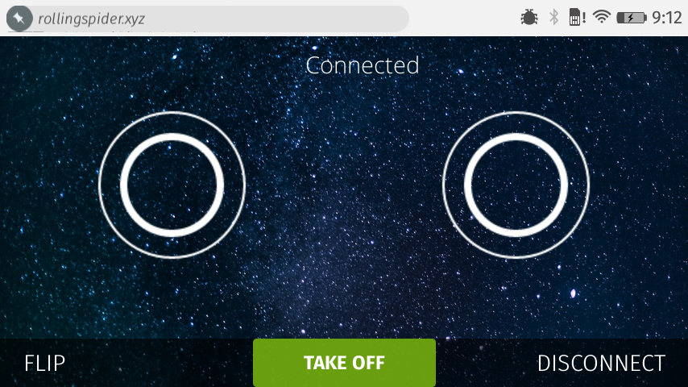

我們周遭有太多的裝置，且整體數字還在攀升。其中具備連線功能的裝置也越來越多，從登機箱到盆栽，甚至冰箱裡面的蛋盒都能連上你的手機！但這也造成新的問題：我們該如何找出四周的裝置，又該如何互動呢？
目前的裝置互動作業，都交由智慧手機所執行的不同 App 處理。但這仍無法解決「可發現性 (Discoverability)」的問題。在我決定要安裝 App 之前，必須先知道周遭到底有哪些裝置。但站在會議室門口時，其實我才不在乎要安裝哪個 App，甚至會議室的名稱或代碼也不重要。我只想儘快預定會議室，或知道現在到底有沒有人預約使用這個會議室？
藍牙
Google 的 Scott Jenson 思考可發現性的問題已有一陣子，並想出了「Physical Web」專案，希望達到「走上街就能使用所有東西」。此一概念就是要透過「Bluetooth Smart」這個藍牙的低耗電變體，將網址廣播出去。你的手機將拾取 advertisment 封包、進行解碼，再對使用者顯示某些資訊。輕輕點擊就會重新導至相關內容的網頁。如此就能應用於多種東西：
- 會議室可廣播其排程行事曆的網址。
- 電影海報可廣播上映時間與預告片段的網址。
- 處方藥品可廣播藥物治療與重新領藥的資訊網址。
- 自己看看周遭是否還有任何等你發掘的使用範例。

但實際情況並非單行道那樣簡單，所以會造成問題。廣播網址當然有助於我獲得如電影放映時間等的資訊，但卻無法用手上裝置進一步互動。如果我想遙控無人空拍機，當然不能只是找到我附近的空拍機而已，也要能直接與空拍機互動。我們希望找出網頁和裝置的溝通方式。
感謝
感謝台北 WebBluetooth 團隊的黃慈霖 (Tzu-Lin Huang) 與李瑋倫 (Sean Lee) 建構了初始的無人機程式碼。而我針對 API 所發的抱怨，台北團隊 (特別是劉晏如 (Jocelyn Liu)) 都能迅速做出回應並提供修正檔。還有 Chris Williams 把無人空拍機放進我的 JSConf.us 禮物袋；Scott Jenson 不厭其煩的回答我 Physical Web 問題；而且 Telenor Digital 公司還讓我玩無人機玩了兩個禮拜。
另外再看到 Web Bluetooth W3C 團隊的工作心血，其內就包含了 Mozilla 藍牙團隊要將 bluetooth API 帶入瀏覽器的作品。如果 Physical Web 讓我們能靠近任何裝置並取得 Web App 的網址，就能讓 WebBluetooth 接著使 Web App 連上裝置並反過來開始溝通。
講到這裡，還是有一堆事情要完成。像是 bluetooth API 只能接觸 Firefox OS 上驗證過 (Certified) 的內容，因此目前還未能存取一般的網頁內容。在真正解決安全性的問題之前，還是得持續目前的狀態。第二個問題就是 Physical Web 將主導網址的廣播作業，那特定的網路資源要如何知道是哪個特定裝置廣播了網址呢？
現在你就知道真的還有一堆事情等著完成了吧？既然這篇原文文章登上了「Mozilla Hacks」部落格，當然就是需要大家動手開發！
如果你對上面描述的東西有著極高興趣，請別錯過原文內所提的範例程式碼，趕快動手打造自己想到的應用吧！說不定下個獲得市場共鳴的應用就是出自於你的手！
結論
Web 真是讓人驚喜不斷！隨著有越來越多裝置上線，我們應該要能輕鬆發現裝置並與之互動。透過 Physical Web 與 WebBluetooth 的整合，我們建構出順暢體驗，要讓使用者願意與實際應用＼新款裝置進行互動。雖然還有很長的一段路要走，但應該已經走上對的方向了。Mozilla 與 Google 正主動開發相關技術。我高度期待本文所提到的東西，在未來一年內都會變成極為普通的常識！
如果一年的時間對你來說太長，那你也能直接開始把玩 Firefox OS 的實驗性版本。此版本已啟用了本文所提過的所有東西，並可於「Flame」開發者裝置上執行。先升級到 nightly_v3 base image 再刷進此版本。